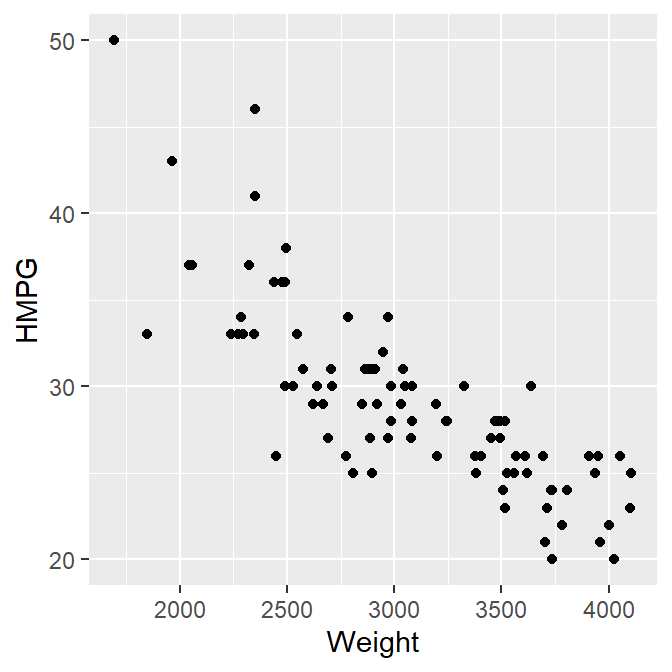
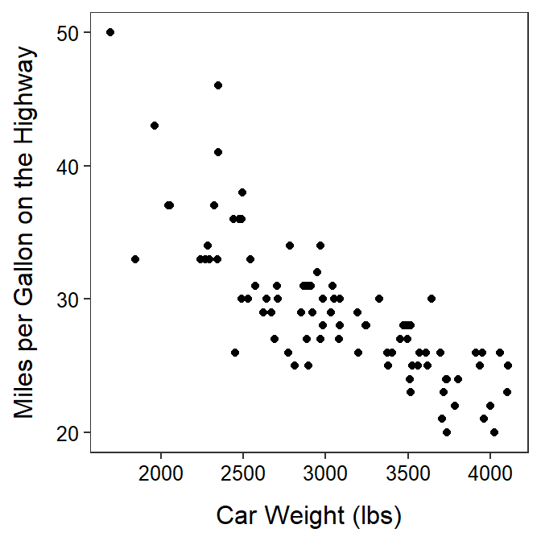
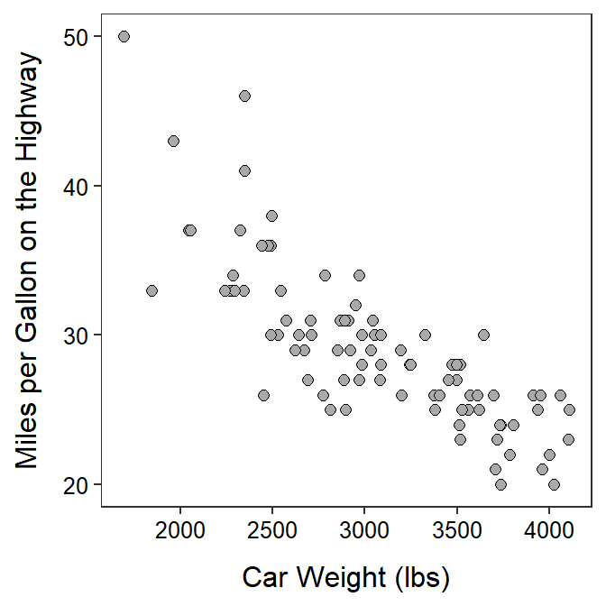

Module 26 Bivariate EDA in R
In the Modules 8 and 10 you practiced performing an EDA for pairs of quantitative or categorical data using summary statistics and graphics. In this module, you will learn how to construct those summary statistics and graphics from data using R.96 You will also be asked to perform the EDA from these results.
Data Sets
The quantitative summaries and graphics will use the weight (lbs) and highway miles per gallon (HMPG) for 93 cars from the 1993 model year. Ultimately the relationship between highway MPG and the weight of a car is described. These data are in 93cars.csv (data, meta) and are loaded into R below with the methods described in Section 23.1.2.97
cars93 <- read.csv("93cars.csv")
headtail(cars93,which=c("MFG","Model","Type","Weight","HMPG"))#R> MFG Model Type Weight HMPG
#R> 1 Acura Integra Small 2705 31
#R> 2 Acura Legend Midsize 3560 25
#R> 3 Audi 90 Compact 3375 26
#R> 91 Volkswagen Corrado Sporty 2810 25
#R> 92 Volvo 240 Compact 2985 28
#R> 93 Volvo 850 Midsize 3245 28
Methods for categorical data will be demonstrated with two questions from the General Sociological Survey (GSS).
- What is your highest degree earned? [choices – “less than high school diploma,” “high school diploma,” “junior college,” “bachelors,” or “graduate”; labeled as
degree] - How willing would you be to accept cuts in your standard of living in order to protect the environment? [choices – “very willing,” “fairly willing,” “neither willing nor unwilling,” “not very willing,” or “not at all willing”; labeled as
grnsol]
These data, stored in GSSWill2Pay.csv (data,meta), are loaded into R and examined below.
gss <- read.csv("GSSWill2Pay.csv")
str(gss)#R> 'data.frame': 3955 obs. of 2 variables:
#R> $ degree: chr "ltHS" "ltHS" "ltHS" "ltHS" ...
#R> $ grnsol: chr "vwill" "vwill" "vwill" "vwill" ...As is typical, the categorical variables are recorded as character type. Both degree and grnsol are ordinal categorical variables and, thus, should be converted to factor variables types so that the order of the levels can be controlled. To assist with this, use unique() to see the exact spelling of each of the levels.
unique(gss$degree)#R> [1] "ltHS" "HS" "JC" "BS" "grad"unique(gss$grnsol)#R> [1] "vwill" "will" "neither" "un" "vun"The variables are then converted to factors below with factor() using levels= to control the order of the variables.98
gss$degree <- factor(gss$degree,levels=c("ltHS","HS","JC","BS","grad"))
gss$grnsol <- factor(gss$grnsol,levels=c("vwill","will","neither","un","vun"))The levels are checked with levels() below to make sure that the order is correct and that none are missing (which would imply that the level was mis-spelled above).
levels(gss$degree)#R> [1] "ltHS" "HS" "JC" "BS" "grad"levels(gss$grnsol)#R> [1] "vwill" "will" "neither" "un" "vun"Ordinal variables should be converted to factor variables in R, with the levels controlled to their natural (rather than alphabetical) order.
26.1 Quantitative
26.1.1 Scatterplots
Scatterplots are constructed by giving the x- and y-axis variables to x= and y= in aes() in ggplot()99 and then adding geom_point().
ggplot(data=cars93,mapping=aes(x=Weight,y=HMPG)) +
geom_point()
Define both x and y variables for a scatterplot.
The axis labels can be properly labeled with labs() and the theme used in the course applied with theme_NCStats().100
ggplot(data=cars93,mapping=aes(x=Weight,y=HMPG)) +
geom_point() +
labs(x="Car Weight (lbs)",y="Miles per Gallon on the Highway") +
theme_NCStats()
There may be times where you want to change the shape of symbol that is plotted by including a numeric code to shape= in geom_point(). Shape codes are shown in Figure 26.1.
Figure 26.1: Point shapes available in R and their numerical codes. For shapes 0-20 that color= controls the shapes color, but for shapes 21-25 color= controls the outline color and fill controls the inside color of the shape.
My typical choice for plotting points are shown below.101
ggplot(data=cars93,mapping=aes(x=Weight,y=HMPG)) +
geom_point(shape=21,color="black",fill="darkgray",size=2) +
labs(x="Car Weight (lbs)",y="Miles per Gallon on the Highway") +
theme_NCStats()
When making your own scatterplot, copy the code above and change the items in data=, x=, y=, x=, and y=. All other items can remain as shown above.
26.1.2 Correlation Coefficient
The correlation coefficient (r) between two quantitative variables is computed with corr() using a formula of the form ~qvarY+qvarX,102 where qvarY and qvarX are the names of quantitative variables, as the first argument and the corresponding data frame in data=.103 The number of decimal places is controlled with digits=.104 For example, the correlation coefficient between highway MPG and weight for all cars in the car data is -0.811.
corr(~HMPG+Weight,data=cars93,digits=3)#R> [1] -0.811corr(HMPG~Weight,data=cars93,digits=3) # alternative form#R> [1] -0.811The correlation coefficient can be computed for pairs of multiple variables by “adding” the multiple variables to the formula described above. Note that use="pairwise.complete.obs" should be used used to make sure that missing data is removed when calculating the correlation coefficient for each pair of variables.
corr(~HMPG+FuelTank+Length+Weight,data=cars93,use="pairwise.complete.obs",digits=3)#R> HMPG FuelTank Length Weight
#R> HMPG 1.000 -0.786 -0.543 -0.811
#R> FuelTank -0.786 1.000 0.690 0.894
#R> Length -0.543 0.690 1.000 0.806
#R> Weight -0.811 0.894 0.806 1.000
26.2 Categorical
26.2.1 Frequency Tables
Two-way frequency tables are constructed in R with xtabs(), where the first argument is a formula of the form ~cvarRow+cvarCol, where cvarRow and cvarCol are categorical variables to form the rows and columns of the table, in the first agument and the corresponding data frame in data=. The result of xtabs() should be assigned to an object for further use.
( tbl1 <- xtabs(~degree+grnsol,data=gss) )#R> grnsol
#R> degree vwill will neither un vun
#R> ltHS 40 145 132 151 178
#R> HS 87 542 512 557 392
#R> JC 15 61 64 54 44
#R> BS 42 199 179 187 75
#R> grad 24 104 83 64 24Totals may be added to the margins of a saved table with addMargins().
addMargins(tbl1)#R> grnsol
#R> degree vwill will neither un vun Sum
#R> ltHS 40 145 132 151 178 646
#R> HS 87 542 512 557 392 2090
#R> JC 15 61 64 54 44 238
#R> BS 42 199 179 187 75 682
#R> grad 24 104 83 64 24 299
#R> Sum 208 1051 970 1013 713 395526.2.2 Percentage Tables
Percentage tables are constructed in R by submitting the saved xtabs() object to percTable().105 A total- or table-percentage table is constructed by default.
percTable(tbl1)#R> grnsol
#R> degree vwill will neither un vun Sum
#R> ltHS 1.0 3.7 3.3 3.8 4.5 16.3
#R> HS 2.2 13.7 12.9 14.1 9.9 52.8
#R> JC 0.4 1.5 1.6 1.4 1.1 6.0
#R> BS 1.1 5.0 4.5 4.7 1.9 17.2
#R> grad 0.6 2.6 2.1 1.6 0.6 7.5
#R> Sum 5.3 26.5 24.4 25.6 18.0 99.8A row-percentage table is constructed by including margin=1 in percTable().
percTable(tbl1,margin=1)#R> grnsol
#R> degree vwill will neither un vun Sum
#R> ltHS 6.2 22.4 20.4 23.4 27.6 100.0
#R> HS 4.2 25.9 24.5 26.7 18.8 100.1
#R> JC 6.3 25.6 26.9 22.7 18.5 100.0
#R> BS 6.2 29.2 26.2 27.4 11.0 100.0
#R> grad 8.0 34.8 27.8 21.4 8.0 100.0A column-percentage table is constructed by including margin=2 in percTable().
percTable(tbl1,margin=2)#R> grnsol
#R> degree vwill will neither un vun
#R> ltHS 19.2 13.8 13.6 14.9 25.0
#R> HS 41.8 51.6 52.8 55.0 55.0
#R> JC 7.2 5.8 6.6 5.3 6.2
#R> BS 20.2 18.9 18.5 18.5 10.5
#R> grad 11.5 9.9 8.6 6.3 3.4
#R> Sum 99.9 100.0 100.1 100.0 100.1
26.3 Generic R Code
The following generic codes were used in this module and are provided here so that you can efficiently copy and paste them into your assignment. Also examine the “R Function Guide” on the class Resources page for more guidance.
- Construct a scatterplot.
ggplot(data=dfobj,mapping=aes(y=qvar1,x=qvar2)) +
geom_point(pch=21,color="black",fill="lightgray") +
labs(y="better qvar1 label",x="better qvar2 label") +
theme_NCStats()- Compute the correlation coefficient.
corr(~qvar1+qvar2,data=dfobj,digits=3)- Construct a frequency table.
freq2 <- xtabs(~cvarRow+cvarCol,data=dfobj)
addmargins(freq2) # append totals- Construct percentage tables.
percTable(freq2) # total/table %
percTable(freq2,margin=1) # row %
percTable(freq2,margin=2) # column %
Methods in this module require the
NCStatspackage (as always) and theggplot2package (for making graphs). Both packages are loaded in the first code chunk of the assignment template.↩︎The
which=argument inheadtail()is used to show only a few variables ofcars93, just to save space.↩︎Recall from the previous module that these levels must be spelled exactly as they appear in the data frame.↩︎
The use of
ggplot()was introduced in the previous module.↩︎Both
labs()andtheme_NCStats()were introduced in the previous module.↩︎The
size=is used to make the points larger.↩︎Note that
qvarY~qvarXwill also work.↩︎corr()is fromNCStats.↩︎Two or three decimals should be used for correlation coefficients.↩︎
percTable()is fromNCStats.↩︎